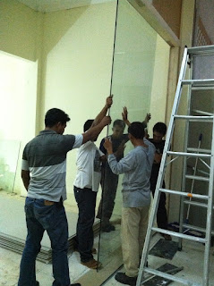

Semakin berkembangnya dunia pembangunan, maka hadir banyak material penambah yang melengkapi estetika sebuah banguanan. Kaca semakin melengkapi bangunan agar kelihatan lebih indah dan memiliki skor keindahan kalau di pandang orang. Berikut sedikit penjelasan yang dapat anda baca mengenai sebagai rujukan and ajika akan membangun rumah ataupun tempat usaha.
Kini sudah hadir beraneka maca ragam kaca yang dapat ditemui, tiap kaca mempunyai fungsinya masing-masing. Dapat untuk system keamanan, keindahan dan masih banyak yang dapat di dapatkan dari pemasangan kaca. Ragam kaca-kaca tersebut diantaranya yakni kaca tempered, kanopi kaca, kaca frameless, kaca cermin, railing kaca dan masih banyak ragam kaca lainnya yang dapat anda dapatakan dan anda aplikasikan pada bangunan. Setiap kaca mempunyai fungsi masing-masing yang membuat banyak orang semakin mebutuhkannya dari hari ke hari. Berikut ini sedikit penjelasan mengenai bermacam tipe kaca dan fungsi kaca dan juga parket lantai kayu jati yang dapat anda temukan.
Distributor & Supplier Kaca Shower Sorong

Anda pastinya meninginkan desain kamar mandi rumah layaknya kamar mandi hotel berbintang yang menerapkan kamar kecil duduk serta dilengkapi shower maupun bath tub. Salah satu cara yang dapat digunakan untuk menciptakan kamar mandi yang selalu bersih merupakan memakai shower sebab metode pembersihannya memang jauh lebih praktis dibanding dengan yang menerapkan konsep bak mandi. Kaca shower ini dapat menjadi dan mempunyai poin keindahan tersendiri sebab dengan memasangnya tentu kamar mandi anda akan menonjol lebih menawan dan mewah layknya kamar mani hotel. Ada beberapa alasan mengapa Pintu Kaca Shower banyak digunakan salah satunya merupakan kaca lebih nampak bersih dan rapi dan juga lebih mudah dalam perawatannya. Di samping pintu kaca shower Sorong akan membuat kamar mandi kecil nampak lebih besar.
Dis.or.id menyediakan kaca shower Sorong dengan mutu premium sehingga saat dipasang akan lantas terlihat mewah. Disana anda bisa menerima kac shower yang cocok dengan keinginan anda. Anda dapat buktikan sendiri.
Info Pemesananan Selengkapnya
Google Maps: https://www.google.com/maps/d/u/0/viewer?mid=1I5MJD15eG4u4a5bgD4SWwLmUemJgyEPx&ll=-7.27380280025364%2C112.65243155000007&z=18
Note: https://www.facebook.com/notes/distributor-of-industrial-supply/pabrik-supplier-kaca-shower-kaca-pembatas-shower-kamar-mandi/1785693275063885/
Event: https://www.facebook.com/events/308143373033869/
Portfolio Produk: https://www.facebook.com/1681607345472479/photos/?tab=album&album_id=1712628919036988
Distributor, Supplier & Jasa Pasang Kanopi Kaca
Note: https://www.facebook.com/notes/distributor-of-industrial-supply/pabrik-supplier-kaca-shower-kaca-pembatas-shower-kamar-mandi/1785693275063885/
Event: https://www.facebook.com/events/308143373033869/
Portfolio Produk: https://www.facebook.com/1681607345472479/photos/?tab=album&album_id=1712628919036988
Distributor, Supplier & Jasa Pasang Kanopi Kaca

Seiring dengan perkembangan zaman di dunia properti, kini kanopi kaca sudah berkembang kencang mengikuti arsitektur modern. Anda dapat memilih kanopi kaca yang layak dengan keperluan dan keinginan anda. Harga dari tiap-tiap kaca yang ditawarkan cukup berbagai tergantung kaca yang nanti akan diaplikasikan. Progres ini memang desain shower berbahan kaca memang lebih banyak dipakai daripada desain shower berbahan tirai. Ada sebagian alasan mengapa Pintu Kaca Shower banyak digunakan salah satunya adalah kaca lebih kelihatan bersih dan rapi dan juga lebih gampang dalam perawatannya. Jikalau tembus pandang, kaca mengabsorpsi sinar yang masuk sehingga semakin tebal kaca maka semakin sedikit cahaya yang dapat melewatinya, karenanya sifat transparannya makin berkurang.|Di samping pintu kaca shower akan membuat kamar mandi kecil nampak lebih besar. Atap akrilik atau bisa juga disebut atap kaca acrylic ini banyak ditemukan di sebuah bangunan rumah, seperti ruko, apartemen, kafe, mall, hingga bangunan gedung.
Ini tampak dari bahan material yang di gunakan dalam pembuatan kanopi kaca. Anda juga bisa memenfaatkan jasa pemasangan atap kanopi kaca dengan segala jenis kaca yang anda butuhkan yang layak dengan kriteria atap kanopi. Banyak bangunan seperti gedung perkantoran, perumahan, ruko dan apartement yang menggunakan kanopi kaca tempered. Setelah kaca untuk atap kanopi cukup digemari. Tidak anda sedang mencari kanopi kaca, anda bisa seketika mengunjungi dis.or.id.
Jasa Maintenance Kaca
Jasa maintenance kaca menawarkan pelayanan perawatan bahan bangunan yang terbuat dari kaca. Salah satunya pelayanan berupa pembersihan gedung yang terbuat dari kaca. Selain hanya membersihkan kaca, jasa maintenance kaca juga bisa mengerjakan perbaikan.
Sekarang juga hadir maintenance kaca untuk membersihkan kaca berbentuk melengkung.
Tidak anda mebutuhkan jasa maintenance kaca, anda bisa mengunjungi dis.or.id. Dengan tenaga pakar yang siap untuk menjalankan pembersihan dan bahan pembersih yang di miliki, kaca gedung perkantoran Anda akan terlihat seperti baru lagi. Apabila pakar juga amat menentukan.
Jasa Pemasangan Kaca Tempered
Jasa pemasangan kaca tempered menawarkan solusi bagi Anda mempunyai budget yang terbatas tapi berharap memiliki properti, entah itu gedung perkantoran, kios, atau rumah hunian yang menerapkan kaca tempered. Kian banyak orang yang mau menggunakan kaca ini. Dis.or.id memiliki seluruh daya spesialis yang di rekrut hanya mereka yang profesional yang tahu persis bagaimana cara mengaplikasikan alat dan bagaimana membersihkan kaca gedung bertingkat. Kecuali itu saja. Kecuali sembarang tukang juga dapat mengerjakan proses pemotongan ini. Sekarang, kian banyak properti yang mengaplikasikan kaca tempered. Selain ini tidak lain karena semakin banyak orang yang memahami kualitas serta keunggulan dari kaca tempered ini.
Dengan mangunjungi dis.or.id, anda dapat mendapatkan dan memanfaatkan jasa kaca tempered yang sesuai dengan kemauan anda. Kecuali tenaga ahli yang dimiliki oleh dis merupakan yang professional dan berpengalaman. Bukan sembarang alat yang diaplikasikan untuk memotong kaca tempered pantas dengan keperluan. Tak ketika ini anda sedang mau membangun suatu bangunan atau gedung, anda bisa memanfaatkan kaca tempered untuk diterapkan segera ke seluruh jenis bidang. Kalau aman kaca tempered juga cakap memberikan kesan estetika yang sangat bagus dibandingkan dengan kata macam lainnya. Lebih dari itu, dis.or.id sudah menyiapkan daya spesialis yang siap untuk mengerjakan pemasangan, entah itu kaca tempered untuk kanopi, pintu, partisi, balkon, dan lain sebagainya. Harga yang ditawarkan untuk pemasangan kaca tempered benar-benar murah.
Distributor & Supplier Pintu Kaca

Pintu kaca yakni hal yang cukup penting dimiliki oleh sebuah bangunan. Tidak hanya di gedung atau perkantoran, melainkan pntu kaca juga bisa anda aplikasikan pada rumah agar cahaya dapat lantas masuk pada ruangan dan memberikan suasana hangat. Tidak Anda menyukai dengan pintu kaca dengan bingkai, Anda dapat pilih apakah frame hal yang demikian terbuat dari bahan kayu atau aluminium. Energi tipe kaca yang dapat Anda pilih untuk pintu kaca Anda seperti kaca tempered yang sedang booming atau kaca non-tempered yang harganya lebih relatif murah. Desain hal yang demikian dapat disesuaikan dengan konsep properti Anda. Sekarang tak keok penting lagi ialah pemilihan kaca. Dalam hal ini, terdapat beberapa jenis kaca dengan mutu yang terbaik.
Dis.or.id menyediakan pintu kaca dengan pelbagai macam yang dapat anda pilih cocok keperluan. Observasi Ukuran serta ketebalan menyesuikan dengan kemauan Anda.
Dis.or.id siap untuk membikin pintu kaca sesuai dengan apa yang Anda inginkan. Anda dapat memilih kaca tempered yang kini ini sedang naik daun. Untuk budget yang lebih sedikit, Anda dapat memilih variasi kaca non-tempered.
Jual Kaca Cermin
Kaca cermin tak hanya berfungsi untuk bercermin saja tetapi juga sebagai pemanis ruangan. Ini tidak hanya sebagai kaca cermin persegi. kaca cermin lazim dipakai pada bukaan pintu atau jendela dinding luar, yang nantinya diinginkan berpenampilan mewah pada bangunan. Untuk bangunan bertingakat, terutama diterapkan pada variasi dinding kaca. Ada cermin persegi yang dilekatkan beraturan, cermin berbentuk seperti daun, dan lain sebagainya. Malah, ada juga desain kaca cermin yang unik. Untuk membuat ruangan private, maka kaca ini transparan bila dipandang dari dalam.
Dis.or.id ialah penyedia berjenis-jenis ukuran kaca cermin yang bisa anda aplikasikan ke gedung, kantor ataupun rumah anda. Tak cuma itu, harga yang di tawarkan sangatlah relatif murah dengan kwalitas dan juga kualitas terbaik. Banyak orang yang lebih menyukai dengan desain kaca cermin minimalis. Tak model lemari baju di mana komponen pintunya terbuat dari kaca cermin. Atau Anda bisa buat pintu kaca cermin. Dis.or.id menyediakan kaca cermin yang bisa anda beli dengan harga yang sangat murah dan dengan kwalitas terbaik. Namun kunjungi dis.or.id untuk menerima penawaran menarik.
Jasa Pemasangan Railing Kaca
Tidak rumah Anda telah dibangun dengan desain minimalis, karenanya tak salah ketika railing, entah itu railing tangga dan balkon terbuat dari kaca. Kecuali ini disebabkan semakin banyak permintaan terhadap railing ini. Anda dapat menjalankan eksplorasi dengan menerapkan bahan berupa kaca saat ingin mempunyai rumah dengan desain minimalis. Dan kaca ini dapat Anda pakai sebagai bahan untuk membuat kaca railing. Kaca tipe yang satu ini telah familiar dengan ketahanannya. Tetapi, bukan cuma teladan yang sebaiknya Anda jadikan pertimbangan saat berkeinginan mengorder railing kaca ini. Malah juga bahan yang diaplikasikan.
Anda dapat memilih kaca dengan mutu terbaik. Tak ini tak cuma ditetapkan oleh ketebalan atau harga namun juga oleh tipe. Ada kaca tempered yang kini diminati banyak orang. Kaca ini betul-betul kuat dan juga aman. Kini pasti, railing kaca ini menjadi opsi yang tepat. Jikalau memberikan kesan minimalis pada interior rumah, ini juga membuat rumah Anda menonjol lebih nyaman untuk dijadikan daerah tinggal.
Railing kaca dengan mutu terbaik dapat anda peroleh di dis.or.id. Harga yang sungguh-sungguh ekonomis serta kwalitas terbaik yang sudah terjamin membikin anda tak akan menyesal membeli railing kaca di dis.or.id. Tentu dengan harga yang murah namun tetap berkelas.
Distributor & Supplier Pintu Lipat Kaca

Pastinya anda sudah mengetahui banyak kelebihan dari kaca tempered.Jikalau ruang makan bersebelahan dengan taman, Anda bisa sekat dengan pintu lipat kaca ini. Tipe kaca nomor 6 ini betul-betul disarankan untuk dihasilkan sebagai bahan membikin pintu lipat kaca.
Harga pintu kaca lipat frameless ini sangat dipengaruhi oleh ukuran lebar dan tingginya pintu. Banyak pertimbangan yang membuat Anda pasti yakin untuk memilih kaca tempered ketimbang tipe kaca yang lainnya. Kini, banyak kantor yang tidak lagi memiliki ruangan yang disekat dengan tembok dan dikala ini beralih dengan ruangan disekat dengan mengaplikasikan kaca. Jadi, bukan hanya pintu saja yang berupa kaca, melainkan juga segala sekat ruangan.
Jasa Pemasangan Kubikel Toilet
Kubikel kaca banyak dijumpai di bermacam daerah besar seperti perkantoran, gedung, bahnkan sekarang juga bisa di gunakan untuk hunian rumah. Kubikel kamar kecil dapat di gunakan di kamar mandi mall.
Rumah sakit dan perkantoran. Banyak profit yang dapat di peroleh dengan menerapkan kubikel kamar kecil diantaranya adala efisiensi, dimana dalam satu ruangan dapat menampung dan membikin banyak kamar mandi. Kaca juga dapat menjadi solusi keindahan kamar mandi, melainkan juga bisa jadi persoalan sekiranya Anda menggunakan material dan daerah yang salah. Sebab disana terdapat kubikel kamar mandi dengan berbagai ukuran serta ketebalan kaca.
Keuntungan dari sekat kaca memberikan ialah bisa memberikan efek luas sebab ruangan tersekat namun secara visual tidak.
Karena disana terdapat berjenis-jenis ukuran kubikel kamar mandi yang bisa anda jadikan alternatif untuk hunian atau temap usaha anda. Jikalau anda ketika ini sedang membutuhkan kaca shower untuk kamar mandi, lantas saja kunjungi dis.or.id untuk melakukakn pengorderan maupun menanyakan terperinci harga dari kaca shower. Kaca shower yang di jual di jamin kaca shower yang memiliki mutu terbaik dan berkualitas tinggi.
Distributor & Supplier Partisi Kaca

Partisi kaca menjadi opsi yang pas bagi Anda yang ingin menghemat biaya bangunan. Banyak rumah hunian yang sekatnya kini terbuat dari kaca. ini disebabkan banyak keunggulan dari partisi modern ini. memang pembuatan partisi ini jauh lebih murah. Tak hanya rumah, kini perkantoran juga dihasilkan sedemikian rupa supaya kelihatan betul-betul minimalis dan menarik. Anda dapat partisi kaca yang anda inginkan di dis.or.id. Anda mereka. Kecuali, Anda semestinya tahu ada desain yang berbeda. Ada partisi kaca frameless atau tanpa dan partisi dengan bingkai. itu, model partisi kaca ada yang frameless (tanpa bingkai) dan juga ada yang menerapkan pigura. Disana anda akan mendapatkan partisi kaca yang sesuai dengan anda.